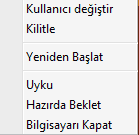

Windows’’un Sunduğu “Hazırda Beklet” ve “Uyku” Seçeneklerini Sürekli Ters Algılamam

Windows Seçenekleri
Denk gelmişinizdir ki Windows işletim sisteminizi kapattığınız yerde iki adet seçenek bulunuyor: “Hazırda Beklet” ve “Uyku”. Windows 8 için böyle midir bilmiyorum ama 7’de böyle. Sanırım “Hazırda Beklet” seçeneği özellikle taşınabilir bilgisayarlarda öne çıkıyor. İkisinin de amacı bilgisayarınızı çalıştığınız şekilde duraklatıp bilgisayarı kapatmak. Bu sayede bilgisayarınızın hard diski dönmediği için (SSD olmadığını kabul edersek) taşımak için güvenli bir yöntem. Ayrıca pilden çalışıyorsanız da bilgisayarınızın güç tüketimi oldukça azalacak. İkisinin arasındaki temel fark ise “Uyku” seçeneğinin bilgisayarınızın durumunu RAM’e kaydedip bilgisayarınızın diğer kısımlarını kapatması ve sadece RAM için güç sağlaması iken “Hazırda Beklet” tüm içeriği (RAM dahil) hard diskinize kaydedip her şeyi kapatıyor. “Hazırda Beklet” seçeneğinin güç tüketimi daha düşük olmasına rağmen bilgisayarınızı geri açtığınızda her şey diskinizden geri okunup yerli yerine konacağı için açılış süresi daha uzun oluyor. “Uyku” seçeneğinde ise veriler RAM’de tutulduğu için RAM’e sürekli güç sağlanıyor. Bu bekleme durumundaki güç tüketimini arttırsa da bilgisayarın açılış süresini düşürüyor.
İşte bence problem burda başlıyor. Bilgisayarın hemencecik açılabileceği yani hazır olduğu durum yani beklemenin RAM aracılığı ile yapıldığı durumun adının “Hazırda Beklet” diğerinin ise “Uyku” olması gerekiyor. En azından benim Türkçe algım böyle. Bir şeyi hazırda bekletiyorum diyorsan hemen işlevsel konuma geçebilmeli. Uyku denilen durum daha derin olması lazım. Uyanacak da, kendine gelecek de, çalışacak da…
Gerçi bu terimlerin İngilizce Windows’taki karşılıklarına bakarsak “Uyku” seçeneği “Sleep”, “Hazırda Beklet” ise “Hibernate” diye geçiyor. “Hibernate” ise anlam olarak derin uyku olarak düşünülebilir. Google Translate’den çevrilirse kış uykusuna yatmak olarak geçiyor. Bence burada problem yok. RAM’de bekletmek uyumak ise diske kaydetmek kış uykusu olabilir, mantıklı. Ama Türkçe çevirilerinin ters olduğunu düşünüyorum.
Her seferinde yaptığı çeviriden dolayı beni yanılttığı için yanlış seçeneği seçtiğimde de Microsoft’u anıyorum. :)